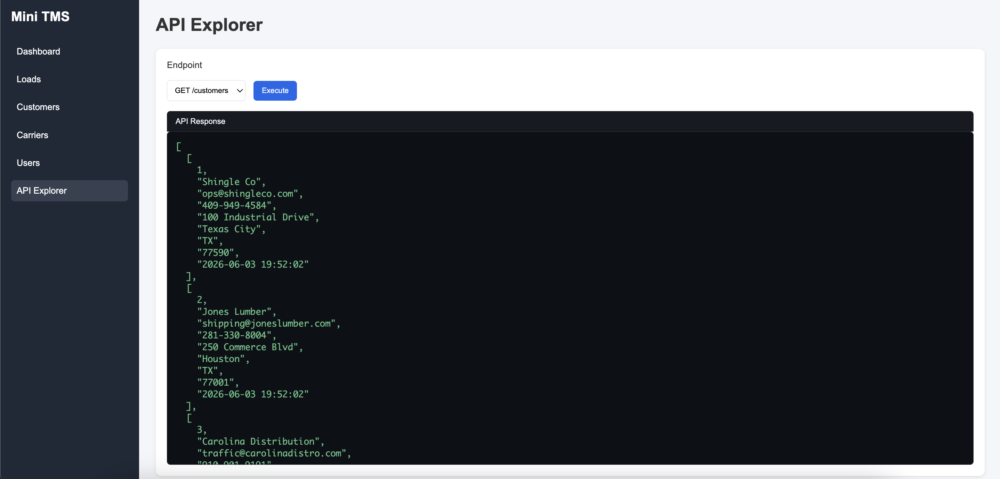

I help carriers, brokers, and logistics teams get more value from the software they rely on every day. With experience supporting TMS platforms, troubleshooting integrations, and partnering directly with customers, I bridge the gap between freight operations and technology.
For nearly a decade, I've worked at the intersection of logistics and software, helping transportation companies navigate operational challenges and technology issues.
My background includes TMS support, customer success, onboarding, troubleshooting, training, workflow optimization, and integrations.
Today I'm expanding my technical skillset through hands-on projects focused on APIs, integrations, EDI workflows, and transportation software.
Diagnosing software issues, troubleshooting workflows, and helping users succeed.
Building trusted relationships and driving adoption of technology solutions.
Supporting APIs, EDI, tracking providers, accounting platforms, and carrier systems.
Experience supporting TMS platforms, visibility tools, and freight workflows.
A project built to deepen my understanding of APIs, integrations, and freight technology.

This project serves as a hands-on sandbox for learning freight technology, APIs, integrations, and transportation software architecture.
GitHub: View Repository
Tech Stack: Python, FastAPI, SQLite, HTML, CSS, JavaScript
I'm always open to discussing freight technology, customer success, transportation software, and integrations.
Email: clayrlanders@gmail.com
LinkedIn: linkedin.com/in/clay-landers-35220b117/